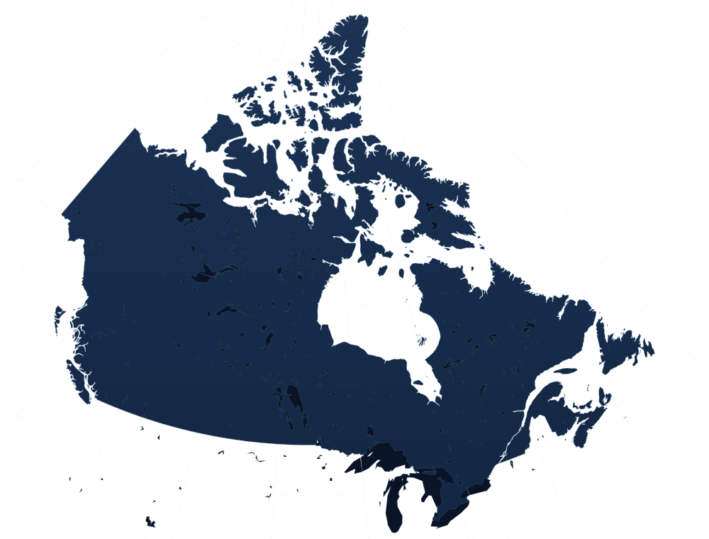

institutions on IRCC’s designated learning institutions list — the only places a study permit is valid.
Always confirm your institution and programme on the official list before applying.
IRCC DLI list, snapshot 24 Aug 2026Study in Canada
World-class universities, vibrant cities and a clear plan for every step — admissions, costs and study permits — with a Tutee Connect counsellor.
A country that asks what you want to become
Canada pairs publicly funded universities and colleges with clear federal rules for students — study where it is designated, work within set limits, and build on what you learn after you graduate.
institutions on IRCC’s designated learning institutions list — the only places a study permit is valid.
Always confirm your institution and programme on the official list before applying.
IRCC DLI list, snapshot 24 Aug 2026of off-campus work during regular terms for eligible students; no weekly limit during scheduled breaks.
Depends on your study permit conditions. Part-time income can’t be used as proof of funds.
canada.ca — Work off campus, checked Oct 2026Post-Graduation Work Permit for certain eligible graduates of eligible programmes.
Length usually follows programme length; language results and field-of-study rules apply. Not automatic.
canada.ca — About the PGWP, checked Oct 202601 Destinations
Select a city on the map to open its dossier — atmosphere, universities, study strengths, living-cost considerations and seasons. Markers are plotted from real coordinates.

Institution counts: IRCC Designated learning institutions list (24 Aug 2026). Map: Natural Earth; lakes © OpenStreetMap contributors (ODbL).
02 Top universities
Explore 19 of Canada's top research universities, filter by study area, and open a profile. Every institution here is on IRCC's designated list.
Tuition, intakes and entry requirements change by programme and year — your counsellor confirms them on each official site rather than us guessing here.
Found a few that fit? A counsellor turns them into a shortlist — ambitious, target and safe.
Build my shortlist →03 Programme discovery
Choose a level, a field and a region. You'll see what that route usually looks like in Canada, which universities are known for the field, how many institutions match, and the PGWP points to check.
04 Admissions & intakes
Pick your level to see what Canadian institutions typically ask for, then choose an intake to get a working timeline. This is planning guidance — each programme sets its own requirements and deadlines.
General guidance. Minimum grades, test scores and documents are set by each institution and programme, and change by intake. Your counsellor confirms them on the official programme page before you apply.
Intake planner
September is Canada's main intake; January is common and May is offered by some programmes. Months are suggested lead times, not official deadlines. Study permit processing times vary by country — check the IRCC processing-times tool.
Plan my intake with a counsellor →05 Your journey
Eight stages, with what Tutee Connect does at each — and which decisions belong to institutions or to the Government of Canada.
We review your academics, test scores, work history, budget and goals, and talk honestly about whether Canada — and which kind of programme — fits you.
A shortlist built on entry requirements, total cost, co-op options, location and programme-level PGWP eligibility — with official links you can verify.
Statements of purpose, CVs and references written with you, in your own words, and applications submitted to each institution's portal on time.
Institutions decide admission. When an offer arrives we help you read its conditions, deadlines and deposits, then request your PAL/TAL — or CAQ for Québec.
Tuition, living funds at or above IRCC's minimum, travel, and — where you need it — education-loan documentation with lenders our team works with.
A complete, truthful application file. You apply online with IRCC, give biometrics and any requested medical exam. IRCC alone decides.
Housing, health coverage, what to pack for your city's climate, documents to carry, and what the conditions on your permit mean.
A border services officer issues your study permit at the port of entry. Then orientation, a bank account, a SIN if you'll work — and your new chapter begins.
06 Working while studying
What the rules allow while you study in Canada — how many hours, when, and what part-time income can and can't do for your budget.
Maximum off-campus work per week during regular academic sessions, if your study permit allows work.
During scheduled breaks such as winter and summer holidays and reading week, if you're eligible.
On-campus work follows separate rules. Always check the conditions printed on your own permit.
Education-loan
partners
07 Scholarships & support
Most international students combine several sources. Here's how each one works — and what decides eligibility.
We don't publish award amounts: they change every intake. A counsellor matches awards to your profile.
Many Canadian universities offer entrance scholarships to international students, usually based on academic results and sometimes on leadership or a separate application.
The Government of Canada lists scholarships open to international students on its official portal. Most target specific countries, levels of study or research areas.
EduCanada — Scholarships ↗Research master's and doctoral students may be funded through teaching or research assistantships, or a supervisor's grant. This depends entirely on the programme and department.
We help you prepare the documents lenders ask for and understand collateral, moratorium periods and disbursement — and how a sanction letter can support proof of funds.
Eligibility, rates and Canada coverage are decided by each lender, case by case.
08 Study permit & after graduation
A guided outline of the general process, checked against Government of Canada pages in October 2026. Eligibility depends on your circumstances, and policies can change.
Not sure which documents apply to you? We review your documents with you before you submit.
Review my permit plan →09 Careers after graduation
We plan the route past graduation from your first choice of course. Each stage has its own rules, decided by the Government of Canada — none of them is automatic, and we never promise an outcome.
Choosing a programme with your career in mind? We map the PGWP and work-experience points before you apply.
Map my career route →09b Coming with family Important
Family plans change which programme you should choose. These rules decide whether your spouse can work and how much money you must show — so we check them before you apply, not after.
An open work permit for a student's spouse or common-law partner is only available for certain programmes — mainly master's programmes of at least 16 months, doctoral programmes and some professional degree programmes (for example medicine, law, nursing or education).
Spouses of most college diploma and bachelor's students cannot get this permit. They can still apply to visit, or for their own study or work permit.
Minor children who come with a parent who is authorised to study in Canada can usually attend pre-school, primary or secondary school without needing their own study permit. Each child still needs the right visitor document to enter.
Dependent children don't get open work permits through your study permit.
Your proof of funds must cover tuition plus living costs for every family member coming with you. For applications from 1 September 2026 the minimum for one person outside Québec is C$23,448 a year; IRCC adds an amount for each extra family member.
Québec applicants follow Québec (MIFI) amounts.
General guidance. Family permit rules change often — confirm on canada.ca and at your consultation. Tutee Connect is not a licensed immigration representative.
10 Life in Canada
Canada's seasons shape everyday student life. Pick one, then explore accommodation, transit, campus, budgeting and community.
11 Questions
Each answer is marked as general guidance or as something that needs an individual assessment. Rules were checked on canada.ca in October 2026 and can change.
General guidance only — not immigration advice. Nothing here guarantees admission or a permit.
Typically academic transcripts, proof of English or French proficiency and, depending on the programme, a statement of purpose, references, CV or portfolio. Requirements are set by each institution and programme.
Needs individual assessmentUniversities award degrees; colleges and polytechnics mainly offer applied diplomas, certificates and some degrees. The right choice depends on your background, goals and the programme's PGWP eligibility.
Needs individual assessmentSeptember is the main intake. Many institutions also have January intakes and some offer May. Availability and deadlines vary by programme — always use each institution's published dates.
General guidanceA provincial or territorial attestation letter is usually required to apply for a study permit. From 1 January 2026, master's and doctoral students in degree-granting programmes at public DLIs don't need one. Québec uses the CAQ instead. Other exemptions exist.
General guidanceIt's set by each institution and differs by programme and year. For example, the University of Waterloo lists international first-year tuition and incidental fees from about C$51,000 (Environment) to C$75,000 (Software Engineering) for a September 2026 start.
General guidanceFirst-year tuition, plus living funds and travel. For applications from 1 September 2026, IRCC's minimum for one person outside Québec is C$23,448 a year (more with family members). Québec applicants follow MIFI's amounts.
General guidanceSome institutions offer competitive entrance awards to international students, and the Government of Canada lists scholarships on EduCanada. Education loans from lenders in your home country are another route. What fits depends on your profile.
Needs individual assessmentThe Student Direct Stream closed in November 2024, and a GIC is not mandatory — it's one of several accepted ways to show funds.
General guidanceNo. IRCC decides every application, and nobody can honestly guarantee approval. We help you prepare a complete and truthful application.
General guidanceIf your study permit allows it, you can work off campus up to 24 hours a week during regular terms and unlimited hours during scheduled breaks. On-campus work has separate rules.
General guidanceAn open work permit of up to three years for eligible graduates of eligible programmes. Its length usually follows your programme's length; master's graduates of programmes of at least eight months can get up to three years. Most applicants must now show language results, and some programmes must meet a field-of-study requirement.
Needs individual assessmentSome graduates later qualify through Express Entry — for example the Canadian Experience Class — or a Provincial Nominee Program. These have their own criteria and change over time. Studying in Canada does not guarantee permanent residence.
Needs individual assessmentOnly if your programme qualifies — mainly master's programmes of at least 16 months, doctoral programmes and some professional degrees. Spouses of most diploma and bachelor's students can't get an open work permit through your study permit.
Needs individual assessmentMinor children accompanying a parent who is authorised to study can usually attend pre-school, primary or secondary school without their own study permit. You must also show funds for them.
General guidanceOfficial sources: IRCC — Study in Canada · EduCanada. Tutee Connect provides education counselling; it is not a substitute for advice from a licensed immigration representative.
12 Student testimonials
Every flight on this board is a Tutee Connect student's journey to Canada. Stories appear only after the student approves their words, name and photo — until then, the seat stays reserved.
Select a flight to hear that student's story.
Tap a seal to open it.
We never invent testimonials. Reserved passes become real stories only when a student approves every word.
Free Canada counselling
Everything you've explored on this page — cities, universities, pathway and budget — is a starting point. A Tutee Connect counsellor will turn it into a plan for you, free and without obligation.